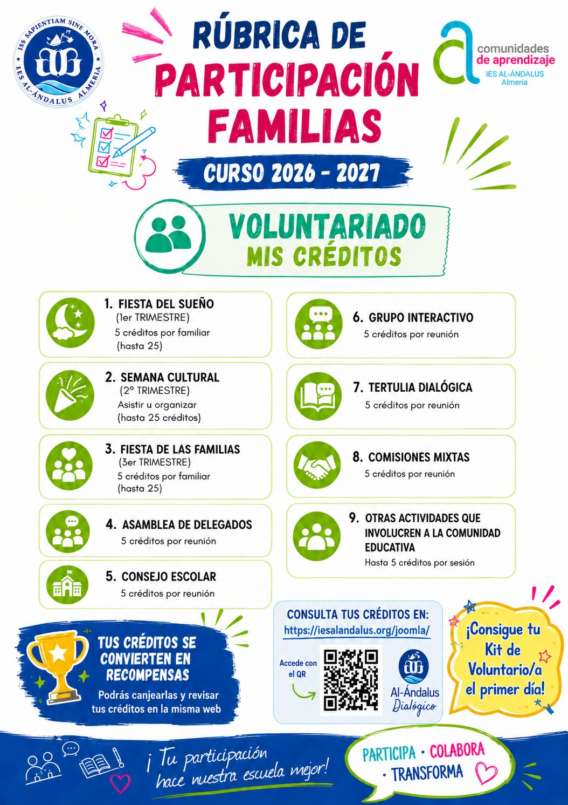
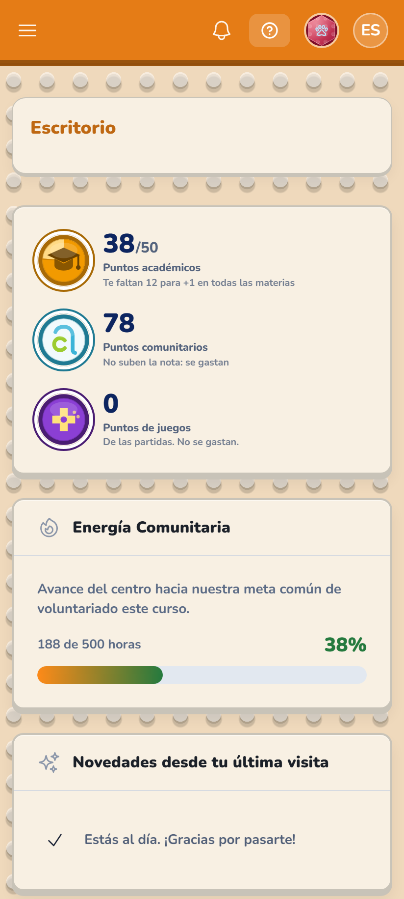
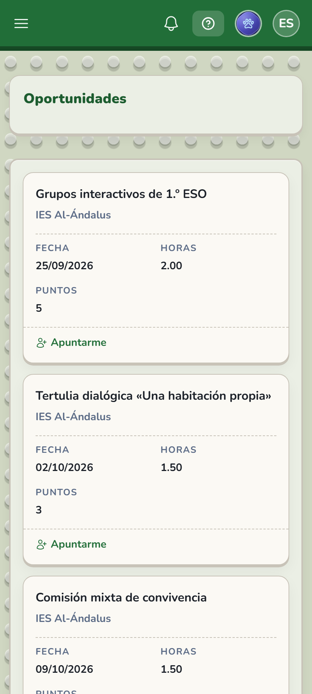
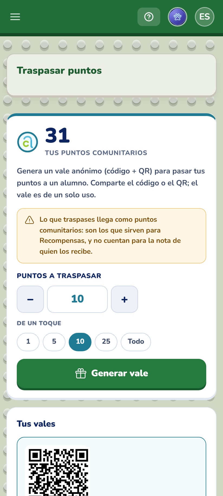
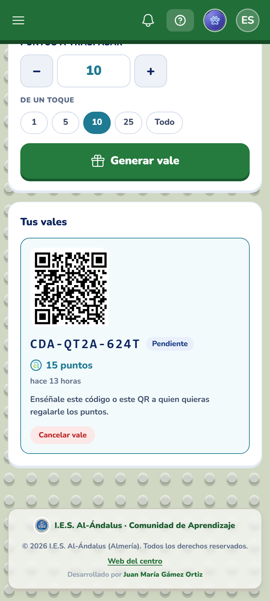
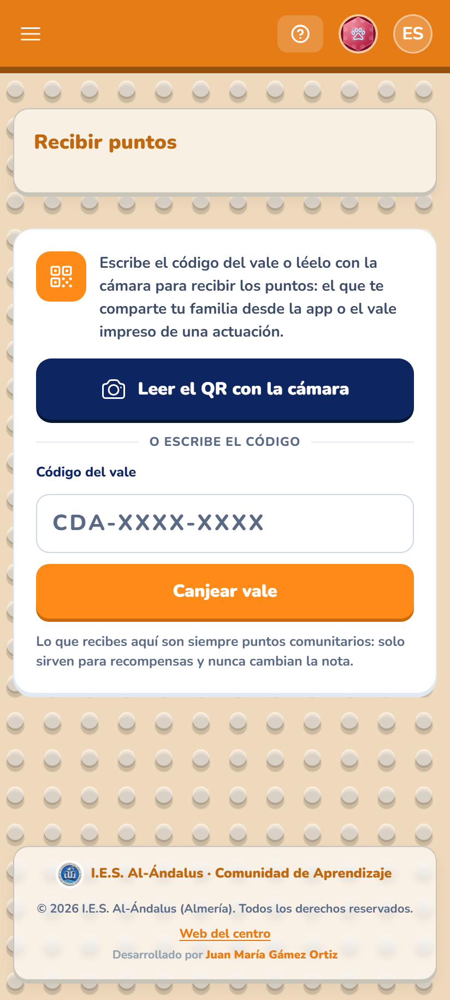
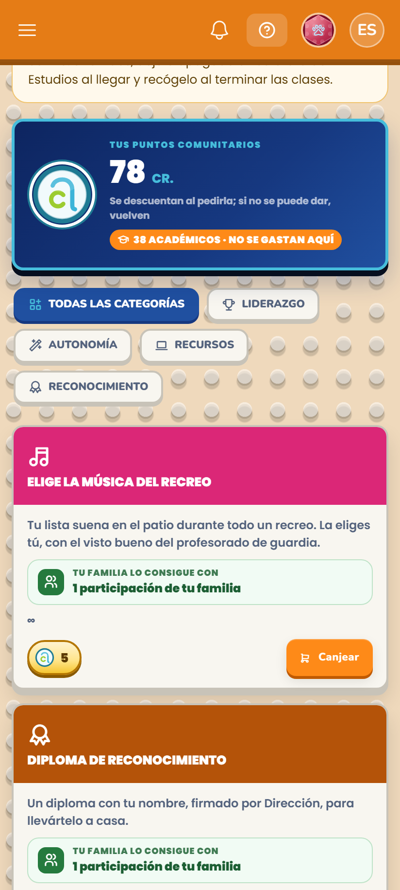
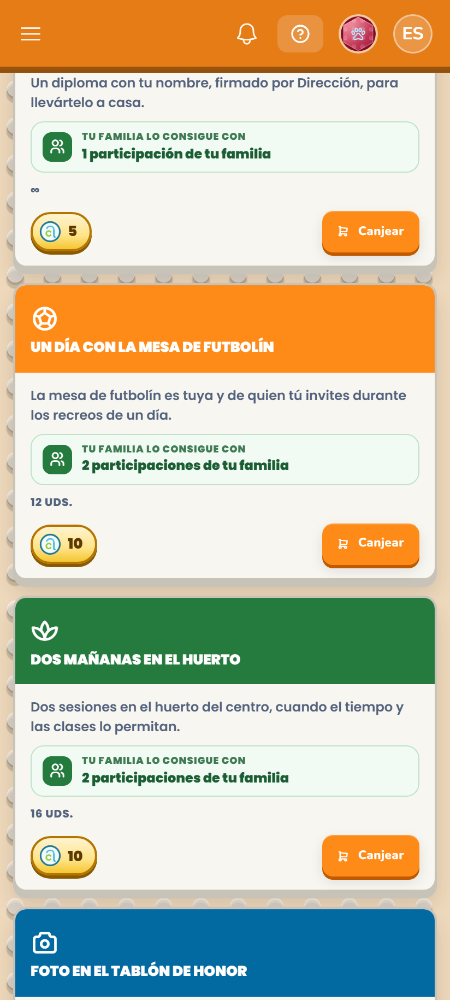

Puntos académicos
Solo los consigue el alumnadoSe los gana él o ella con su trabajo. No se compran ni se regalan.
Al llegar a 50, +1 en la nota final de todas las materias.Comunidad de Aprendizaje · IES Al-Ándalus
Venís al instituto. Ganáis créditos.
Vuestro hijo o hija los cambia por algo que le apetece.
Ya está. Eso es todo.
Dónde los ganáis
No hay que preparar nada ni saber de nada. Se explica al llegar.

No los confundáis
Una es la nota. La otra, las recompensas. No se mezclan.
Se los gana él o ella con su trabajo. No se compran ni se regalan.
Al llegar a 50, +1 en la nota final de todas las materias.Los ganáis participando y se los pasáis con un código.
Sirven solo para recompensas. No suben ninguna nota.Dicho claro: participar no le sube la nota a nadie. La nota se la gana él o ella. Lo vuestro abre otra puerta —la de las recompensas— y esa solo la abrís vosotros.

Con el móvil, en un minuto
Cada actuación dice el día, lo que dura y los créditos que da.

Elegís cuántos créditos le pasáis y sale un código con QR. Sin nombres y de un solo uso.


Con la cámara o escribiendo el código. Al momento.

Y esto es lo que se lleva
Cada recompensa dice cuántas veces tenéis que venir. Sin cuentas.
| Veces | Pts. | Qué se lleva |
|---|---|---|
| 1 | 5 | Elegir la música del recreo · Un diploma firmado |
| 2 | 10 | Un día con la mesa de futbolín · Dos mañanas en el huerto |
| 3 | 15 | Su foto en el tablón de honor · Imprimir su modelo 3D |
| 4 | 20 | Un día sin deberes |
| 5 | 25 | Delegado una semana · Elegir su sitio en clase una semana |
| 6-8 | 30-40 | Dirigir una tutoría · El libro que elija · Padrino de lectura |


Esto no está cerrado
La lista irá creciendo con lo que vaya haciendo falta.
¿Se os ocurre una que esté bien? Escribidnos. La estudiamos y, si encaja y no da problemas, la metemos en la aplicación.
cda@iesalandalus.orgAún la estamos terminando. En cuanto lo esté os mandamos el enlace y os explicamos cómo entrar, paso a paso. Las pantallas de aquí son de la aplicación de verdad.